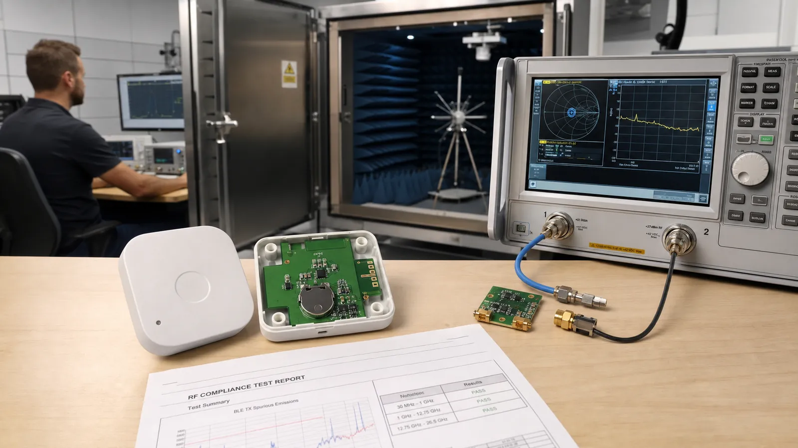

محصول صنعتی فقط Firmware کارکرده نیست. آنتن باید داخل قاب و کنار باتری تست شود، مسیر حقوقی استفاده از Bluetooth بررسی شود و محصول مقررات رادیویی بازار هدف را بگذراند. این برنامه باید پیش از PCB نهایی وارد زمانبندی شود.
Provisioning هویت و کلیدهای شبکه را وارد میکند. Relay پیام را بازپخش، Proxy ارتباط با GATT Client را ممکن و Friend برای Low Power Node پیام نگه میدارد. فعالکردن همه قابلیتها روی همه Nodeها ازدحام و مصرف میسازد؛ نقش هر گره را از توپولوژی انتخاب کنید.
استفاده از طراحی مرجع یا ماژول تأییدشده مسیر را ساده میکند اما مسئولیت محصول نهایی را حذف نمیکند. Bluetooth Qualification با الزامات رادیویی CE، FCC یا بازارهای دیگر یکسان نیست. پیش از تولید، آزمایشگاه و مشاور مقرراتی بازار هدف را درگیر کنید.
ناحیه Keepout آنتن باید از مس، باتری، کابل و قاب نامناسب دور بماند. مسیر RF کوتاه و کنترلشده باشد. شبکه Matching جای اصلاح تصادفی نیست؛ با VNA و Fixture مناسب، S11 و امپدانس را روی محصول مونتاژشده و داخل قاب اندازه بگیرید.
توان خروجی، حساسیت، خطای فرکانس و نشر ناخواسته در شرایط تعریفشده اندازهگیری میشود. RSSI هر تراشه و برد Offset دارد؛ برای کاربرد نسبی میتوان با مرجع و چند سطح سیگنال کالیبره کرد. RSSI را به فاصله دقیق تبدیل نکنید مگر مدل محیطی و عدم قطعیت را پذیرفته باشید.
ماژول یا SoC، آنتن، Stack و مسیر Qualification را مشخص کنید؛ Keepout و Connector تست RF بگذارید؛ نمونه را داخل قاب با باتری نهایی اندازه بگیرید؛ Pre-scan EMC و تست Range انجام دهید؛ سپس فایل تولید و برنامه تست کارخانه را قفل کنید.